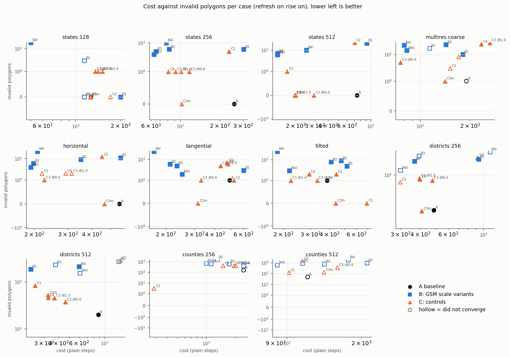
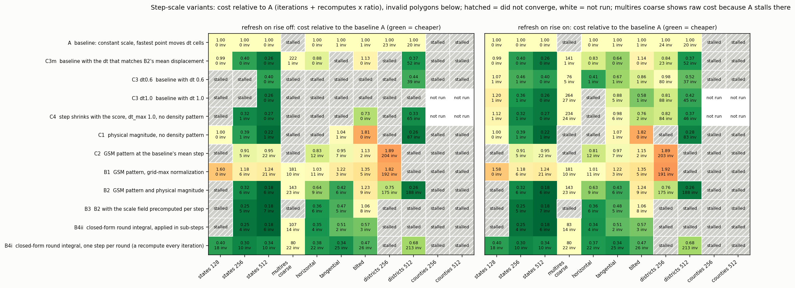
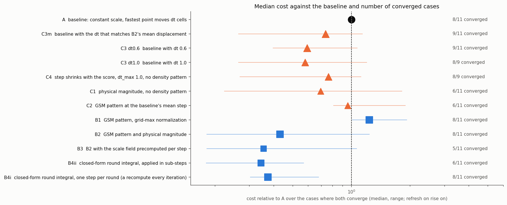

One-glance comparison of the carto-flow step-scale variants tested on the exploration-gsm-scale page, with a glossary: cost relative to the baseline per case, cost against invalid polygons, and the median cost ratio with the number of converged cases.
How to read the figures: the baseline A is one in every case. Cost is in plain-step units (iterations plus field recomputes times the ratio of one recompute to one step, 9 to 47 depending on case). Iteration counts alone mislead: variant B4i takes 5 to 25 iterations because each iteration is a complete round with a recompute, so its cost is 0.3 to 0.7 of A, not 0.05.
| id | what it is |
|---|---|
| A | baseline: one scale for all vertices, the fastest point moves dt cells per step |
| C3m, C3 dt0.6, C3 dt1.0 | the baseline with a larger constant dt (C3m: the dt that matches B2's mean vertex displacement) |
| C4 | step size shrinks with the score (dt_max 1.0), no density pattern |
| C1 | GSM physical magnitude (displacement proportional to the flux, path length 1 per round), no density pattern |
| C2 | GSM density pattern rho_mean / rho(x,t) rescaled to the baseline's mean vertex step |
| B1 | GSM density pattern with the baseline's grid-maximum normalization |
| B2 | GSM density pattern and physical magnitude (cap 1 cell per step) |
| B3 | B2 with the scale field precomputed on the grid for each step |
| B4ii | closed-form time integral of the GSM scale over a round, applied in sub-steps |
| B4i | the same integral applied once per round, with a recompute every iteration (one GSM-style round per iteration) |
Source: data/gsm_scale_tables.md (a copy of exploration-gsm-scale/tables.md); regenerate with uv run python make_overview.py. This page covers only the step-scale variants; the stall, refresh, adaptive-step and area-coverage pages are not included.

Cost against invalid polygons for each case (refresh on). Filled markers converged, hollow ones did not. Lower left is better.

Cost relative to A per case and variant, refresh on rise off (left) and on (right). Green is cheaper than A, hatched cells did not converge, white cells were not run. The second line of each cell is the number of invalid polygons. The multiresolution coarse column shows raw cost because A stalls there.

Median cost relative to A over the cases where both converge, with the range, and the number of converged cases out of those run.